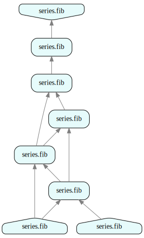
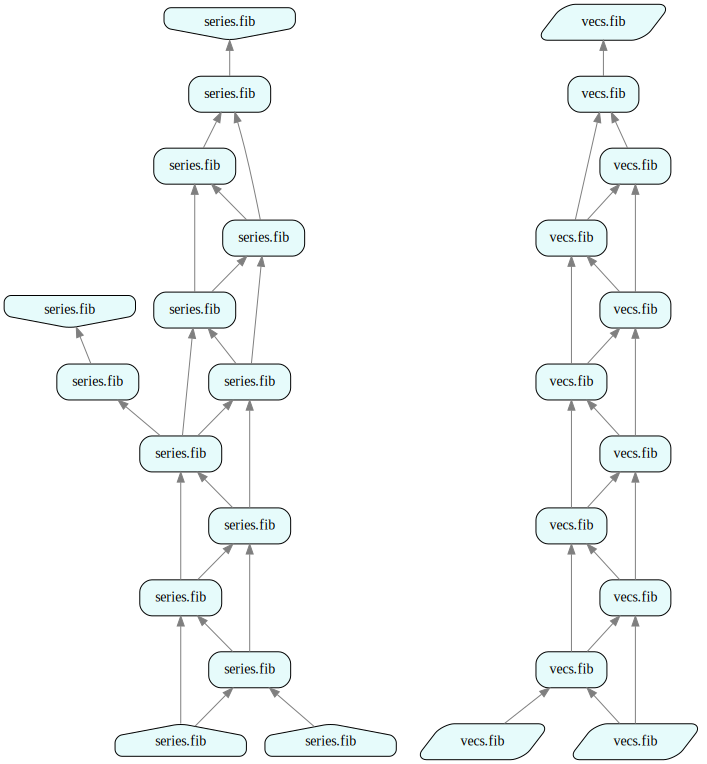
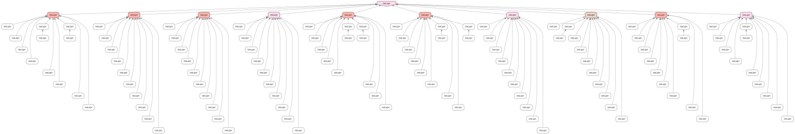

Tutorial 5: Adjoint Algorithmic Differentiation (AAD)
How to use this tutorial
- This tutorial is also available in Jupyter notebook format. To access and run the Jupyter notebook version of the tutorial, please sign up for free developer access by following instructions at https://github.com/juliustechco/juliusgraph.
- Additional resources (video demos & blogs) are available at http://juliustech.co.
- To report bugs or request new features, please raise an issue here. To schedule a live demo, please go to http://juliustech.co. Please email us at info@juliustech.co for other general inquiries.
Introduction
The main topic of this tutorial is adjoint algorithmic differentiation (AAD), a powerful technique for computing first order derivatives quickly and accurately using chain rules. AAD offers a significant performance gain, often thousands of times, when compared to the traditional finite difference method (i.e. bump and recalculation) for computing first order derivatives. AAD is particularly relevant for quantitative finance applications, as the first order derivatives are widely used for hedging and risk management.
The traditional approach to implementing AAD requires a tape to record the primal calculations. Then the tape is run in reverse for the backward AD. This approach is memory intensive and does not scale well to large applications or systems. A large system usually consists of many software components running concurrently on multiple computers, so it is not feasible to record a single consistent tape.
Julius offers an easy and efficient way to implement AAD for large distributed systems. Julius uses the computational DAG to cache the values and keep track of the dependency of the primal calculations, then the entire DAG is run in reverse for the AAD calculation. Both primal and backward AD run can be fully distributed by the Julius Graph Engine for high performance and scalability. All of this is achieved without using the memory intensive tape recordings.
AAD is a rich and complex topic, and this tutorial is only a very high level introduction to Julius' AAD capabilities. Please reach out to us at (info@juliustech.co) for a more in depth demo if you are interested in learning the full capabilities of Julius AAD.
Similar to the quickstart tutorial, we start with a simple Fibonacci sequence example.
Quantom
We have covered the type Datom in the quickstart tutorial. Quantom is another important subtype of Atom, and it stands for quantitative atom. Quantum is the main work horse for numerical computations with AAD in Julius Graph Engine. Unlike Datom that can take any data types as inputs and output, the inputs and outputs of Quantoms must be vectors or matrices of Float64 (double precision floating point numbers). Non-numerical datatypes would not make sense for AAD, which is the primary reason to use a Quantom type.
In this tutorial, we will not go into the details of the Quantom interface or how to implement new Quantom types. Instead, we will use existing Quantom implementations provided by Julius to illustrate the AAD capabilities. Julius provides a rich set of Quantom libraries for the most common numerical algorithms, including root searching, interpolation, and common stochastic processes etc. All the Julius Quantom implementations come with full AAD support and have been extensively tested.
# disable the display of information logging
using Base.CoreLogging
disable_logging(CoreLogging.Info)
using GraphEngine: RuleDSL, GraphVM
using GraphEngine.RuleDSL
using GraphIOThe following few rules define the Fibonacci sequence in the RuleDSL. These definitions are very similar to those we have seen in the quick start tutorials. The only difference here is that the RuleDSL.WeigthedSum quantum is used.
@addrules series begin
fib(x::Float64) = Alias(fib(Int(floor(x))))
fib(n::Int) = RuleDSL.Alias(fib(n, Val(n <= 1)))
fib(n::Int, isend::Val{false}) = begin
RuleDSL.WeightedSum[[1.0; 1.0]](
fib(n - 1, Val(n <= 2)), fib(n - 2, Val(n <= 3))
)
end
fib(n::Int, isend::Val{true}) = RuleDSL.Constant[[fill(Float64(n), 1)]]()
end
config = RuleDSL.Config();The following cell overrides the nodelabel function for the customized display of graph nodes. Users can freely override them to customize the text label display on the computational graph.
# override displays
function nodelabel(::RuleDSL.AbstractGraphState, ref::RuleDSL.NodeRef)
hdr = "$(ref.ns).$(ref.name)"
ps = join(simplerepr.(ref.params), ", ")
return "$hdr($ps)"
endnodelabel (generic function with 1 method)RuleDSL.NumericalData is a sub type of GraphData type that provides runtime support to the adjoint algorithmic differentiation (AAD). The second parameter to NumericalData specifies the default $\vec x$ in the AAD output of $\frac{\partial{\vec y}}{\partial {\vec x}}$. Here $\vec y$ is specified by the unique hash id of hash(fib5):
fib5 = @ref series.fib(5.2)
fib0 = @ref series.fib(0, Val(true))
fib1 = @ref series.fib(1, Val(true))
cs = RuleDSL.NumericalData(config, Set([fib0, fib1]));
gs = RuleDSL.createlocalgraph(config, cs);
# primal calculation
RuleDSL.calcfwd!(gs, Set([fib5]));
# backward AD calculation
RuleDSL.calcback!(gs, Set([hash(fib5)]));We can retrieve the results of $\vec y$ and the first order derivatives from AAD.
y = RuleDSL.getys(gs, hash(fib5))
dydx0 = RuleDSL.getyds(gs, hash(fib0), hash(fib5))
dydx1 = RuleDSL.getyds(gs, hash(fib1), hash(fib5))
println("fib5 =", y[1])
println("dfib5_dfib0 =", dydx0[1])
println("dfib5_dfib1 =", dydx1[1])fib5 =[5.0]
dfib5_dfib0 =[3.0]
dfib5_dfib1 =[5.0]
The corresponding computation graph is shown below, and you can click the link below to see it in an interactive web UI.
# start data server for web UI
gss = Dict{String,RuleDSL.AbstractGraphState}()
port = GraphVM.drawdataport()
@async GraphVM.startresponder(gss, port);
import GraphEngine.RuleDSL: nodelabelWARNING: import of RuleDSL.nodelabel into ##261 conflicts with an existing identifier; ignored.
svg = GraphIO.postlocalgraph(gss, deepcopy(gs), port, true; key="fib5");
GraphIO.postsvg(svg, "aad_1.svg")view graph data at http://127.0.0.1:8080/ui/depgraph.html?dataurl=127.0.0.1:7252_fib5

Figure 1 - Fibonacci with AAD
Caching
One of the main challenges in AAD implementation is its high memory consumption. The reverse AD calculation in AAD requires the primal calculation results to be cached. In the traditional tape based approach, the memory required for caching the primal calculation can quickly grow beyond the size of available physical memory, causing AAD execution to fail for large problems. Advanced AAD techniques such as checkpointing are needed to limit the memory consumption, but they require additional coding efforts and thus further complicate the AAD implementation.
The Julius Graph Engine offers a better alternative by automatically caching all the intermediate results in the computational graph. For very large problems, Julius can automatically distribute the computational graph across multiple computers, and leverage all of their physical memories. Thus, Julius can access practically an unlimited amount of memory when running in distributed mode. In addition, Julius only caches the primal results at the node level, as opposed to the individual arithmetic operator level in the traditional AAD taping implementation. As a result, Julius' caching is much more memory efficient for complex problems. Julius has effectively implemented automatic checkpointing for every individual Quantum. A Quantom object in each individual node can perform a heavy and complex calculation with AAD, and the intermediate primal results within the individual quantoms do not need to be cached.
Because Julius automatically caches all intermediate results in the graph, any incremental computation will automatically re-use existing values in the cache, instead of recomputing them from scratch. The following cells show that when computing fib(10), all the nodes up to fib(5) from the previous step are re-used.
fib10 = @ref series.fib(10)
# primal calculation
GraphVM.calcfwd!(gs, Set([fib10]));
# backward AD calculation
RuleDSL.calcback!(gs, Set([hash(fib10)]));
y = RuleDSL.getys(gs, hash(fib10))
df10df0 = RuleDSL.getyds(gs, hash(fib0), hash(fib10))
df10df1 = RuleDSL.getyds(gs, hash(fib1), hash(fib10))
println("fib10 =", y[1])
println("dfib10_dfib0 =", df10df0[1])
println("dfib10_dfib1 =", df10df1[1])fib10 =[55.0]
dfib10_dfib0 =[34.0]
dfib10_dfib1 =[55.0]
The corresponding computational graph is shown below:
svg = GraphIO.postlocalgraph(gss, deepcopy(gs), port, true; key="fib10");
GraphIO.postsvg(svg, "aad_2.svg")view graph data at http://127.0.0.1:8080/ui/depgraph.html?dataurl=127.0.0.1:7252_fib10
Figure 2 - Caching
Namespace Clone and Override
Rules are organized within individual namespaces in the Julius RuleDSL. For example the series is a namespace in the rules declaration above. One important feature of Julius is that the rules can be cloned to different namespaces and overridden. This facilitates comparisons between the old and new versions of rules, making change management and impact analysis much very simple in practice.
For example, if we update the above Fibonacci sequence definition to take random vectors as fib(0) and fib(1) instead of scalars 0 and 1, we can create a clone of the namespace "series". The cloned namespace automatically inherits all the rules declared in the old namespace. We can override the single rule on the initial terms and keep other rules unchanged from the old namespace.
@clone series => vecs
@addrules vecs begin
fib(n::Int, isend::Val{true}) = RuleDSL.Constant[[randn(10)]]()
endvfib10 = @ref vecs.fib(10)
# primal calculation
@time GraphVM.calcfwd!(gs, Set([vfib10]));
y = RuleDSL.getys(gs, hash(vfib10))
println("vfib10 =", y[1]) 0.470952 seconds (626.51 k allocations: 33.198 MiB, 15.26% gc time, 99.58% compilation time)
vfib10 =[46.88363962705985, 54.266999594055974, -31.592822683544618, -147.67871858694195, -105.28465349280708, -69.8646900633171, -49.123000778045395, 60.724708082613546, 22.885780611697978, -84.7464950008387]
We can see an interactive side by side comparison of the two versions of the calculation, before and after changing the initial values to random vectors, by clicking the URL below to bring up Julius' interactive web UI.
svg = GraphIO.postlocalgraph(gss, deepcopy(gs), port, true; key="vecs");
GraphIO.postsvg(svg, "aad_3.svg")view graph data at http://127.0.0.1:8080/ui/depgraph.html?dataurl=127.0.0.1:7252_vecs

Figure 3 - Override & Compare
Julius AAD implementation supports multiple sensitivity views from the same primal calculation. The sensitivity view is a Jacobian matrix $\frac{\partial \vec y}{\partial \vec x}$ where $\vec y$ and $\vec x$ can be any connected node in the graph.
The following few cells show the computation of different sensitivity views without repeating the primal calculation. Please note that the AAD output of the vector version of the Fibonacci sequence in the new namespace vecs is a full Jacobian matrix.
v10 = @ref vecs.fib(10)
v0 = @ref vecs.fib(0, Val(true))
v1 = @ref vecs.fib(1, Val(true))
# backward AD
RuleDSL.calcback!(gs, Set(hash.([v10])), Set([v0; v1]));
dv10_dv0 = RuleDSL.getyds(gs, hash(v0), hash(v10))
dv10_dv1 = RuleDSL.getyds(gs, hash(v1), hash(v10))
println("fib_v10 = ", RuleDSL.getys(gs, hash(v10))[1])
println("dv10_dv0 = ", dv10_dv0[1])
println("dv10_dv1 = ", dv10_dv1[1])fib_v10 = [46.88363962705985, 54.266999594055974, -31.592822683544618, -147.67871858694195, -105.28465349280708, -69.8646900633171, -49.123000778045395, 60.724708082613546, 22.885780611697978, -84.7464950008387]
dv10_dv0 = [34.0 0.0 0.0 0.0 0.0 0.0 0.0 0.0 0.0 0.0; 0.0 34.0 0.0 0.0 0.0 0.0 0.0 0.0 0.0 0.0; 0.0 0.0 34.0 0.0 0.0 0.0 0.0 0.0 0.0 0.0; 0.0 0.0 0.0 34.0 0.0 0.0 0.0 0.0 0.0 0.0; 0.0 0.0 0.0 0.0 34.0 0.0 0.0 0.0 0.0 0.0; 0.0 0.0 0.0 0.0 0.0 34.0 0.0 0.0 0.0 0.0; 0.0 0.0 0.0 0.0 0.0 0.0 34.0 0.0 0.0 0.0; 0.0 0.0 0.0 0.0 0.0 0.0 0.0 34.0 0.0 0.0; 0.0 0.0 0.0 0.0 0.0 0.0 0.0 0.0 34.0 0.0; 0.0 0.0 0.0 0.0 0.0 0.0 0.0 0.0 0.0 34.0]
dv10_dv1 = [55.0 0.0 0.0 0.0 0.0 0.0 0.0 0.0 0.0 0.0; 0.0 55.0 0.0 0.0 0.0 0.0 0.0 0.0 0.0 0.0; 0.0 0.0 55.0 0.0 0.0 0.0 0.0 0.0 0.0 0.0; 0.0 0.0 0.0 55.0 0.0 0.0 0.0 0.0 0.0 0.0; 0.0 0.0 0.0 0.0 55.0 0.0 0.0 0.0 0.0 0.0; 0.0 0.0 0.0 0.0 0.0 55.0 0.0 0.0 0.0 0.0; 0.0 0.0 0.0 0.0 0.0 0.0 55.0 0.0 0.0 0.0; 0.0 0.0 0.0 0.0 0.0 0.0 0.0 55.0 0.0 0.0; 0.0 0.0 0.0 0.0 0.0 0.0 0.0 0.0 55.0 0.0; 0.0 0.0 0.0 0.0 0.0 0.0 0.0 0.0 0.0 55.0]
v8 = @ref vecs.fib(8, Val(false))
v2 = @ref vecs.fib(2, Val(false))
v3 = @ref vecs.fib(3, Val(false))
# backward AD with a different sensitivity view
RuleDSL.calcback!(gs, Set(hash.([v8])), Set([v2; v3]));
dv8_dv2 = RuleDSL.getyds(gs, hash(v2), hash(v8))
dv8_dv3 = RuleDSL.getyds(gs, hash(v3), hash(v8))
println("fib_v8 =", RuleDSL.getys(gs, hash(v8))[1])
println("dv8_dv0 =", dv8_dv2[1])
println("dv8_dv1 =", dv8_dv3[1])fib_v8 =[17.940433072498767, 20.75436545993954, -12.073550831093547, -56.43101987302141, -40.225159124087014, -26.657435015187623, -18.749746987195017, 23.19079827955867, 8.736689349694377, -32.362940907209804]
dv8_dv0 =[5.0 0.0 0.0 0.0 0.0 0.0 0.0 0.0 0.0 0.0; 0.0 5.0 0.0 0.0 0.0 0.0 0.0 0.0 0.0 0.0; 0.0 0.0 5.0 0.0 0.0 0.0 0.0 0.0 0.0 0.0; 0.0 0.0 0.0 5.0 0.0 0.0 0.0 0.0 0.0 0.0; 0.0 0.0 0.0 0.0 5.0 0.0 0.0 0.0 0.0 0.0; 0.0 0.0 0.0 0.0 0.0 5.0 0.0 0.0 0.0 0.0; 0.0 0.0 0.0 0.0 0.0 0.0 5.0 0.0 0.0 0.0; 0.0 0.0 0.0 0.0 0.0 0.0 0.0 5.0 0.0 0.0; 0.0 0.0 0.0 0.0 0.0 0.0 0.0 0.0 5.0 0.0; 0.0 0.0 0.0 0.0 0.0 0.0 0.0 0.0 0.0 5.0]
dv8_dv1 =[8.0 0.0 0.0 0.0 0.0 0.0 0.0 0.0 0.0 0.0; 0.0 8.0 0.0 0.0 0.0 0.0 0.0 0.0 0.0 0.0; 0.0 0.0 8.0 0.0 0.0 0.0 0.0 0.0 0.0 0.0; 0.0 0.0 0.0 8.0 0.0 0.0 0.0 0.0 0.0 0.0; 0.0 0.0 0.0 0.0 8.0 0.0 0.0 0.0 0.0 0.0; 0.0 0.0 0.0 0.0 0.0 8.0 0.0 0.0 0.0 0.0; 0.0 0.0 0.0 0.0 0.0 0.0 8.0 0.0 0.0 0.0; 0.0 0.0 0.0 0.0 0.0 0.0 0.0 8.0 0.0 0.0; 0.0 0.0 0.0 0.0 0.0 0.0 0.0 0.0 8.0 0.0; 0.0 0.0 0.0 0.0 0.0 0.0 0.0 0.0 0.0 8.0]
1.3 Distributed AAD
With Quantum and NumericalData, implementing AAD for large and complex applications or systems becomes easy. In this section, we show a real world AAD use case of pricing a portfolio of derivatives with a distributed graph.
We first start a local cluster consisting of 3 worker processes to mimic a physical cluster.
using JuliusApps: QFin
# date grid for pricing the portfolio
dgrid = QFin.dategrid(80; nmonth=3)
config = RuleDSL.newconfig(QFin.QFinConfig(dgrid), :project=>"PV/AAD");
# the balancer defines different strategies to distribute the graph computation
# CopyRVs is the most efficient strategy for AAD
balancer = GraphVM.CopyRVs();
my_domain = GraphVM.mydomain()
# draw a port number to start the local cluster esrvice
clusterport = GraphVM.drawdataport();# start a local master service at the given port
gs0 = GraphVM.RemoteGraphProxy(my_domain => 7225)
GraphVM.rpccall(gs0, :startlocalmasterservice, clusterport, 3);We then create a portfolio of 1000 trades across 10 desks, each consisting of 10 trading books with 10 trades of Swap, Swaptions, CDS or cross currency swaps, etc.
ndesk, nbook, ntrade = 10, 10, 10
nd = RuleDSL.getconfig(config, :nd)
asofs = collect(0:4:nd-1)
nodes, apv, aads = QFin.createbook(config, asofs, ndesk, nbook, ntrade);
book = apv.params[1];
# risk view, defining the sensitivities to compute, ie, the x in dy/dx
rvs = Set([RuleDSL.@ref fac.riskview(book)]);cs = RuleDSL.NumericalData(config, rvs)
gs = GraphVM.RemoteGraphProxy(config, my_domain => clusterport, balancer, cs, true)
GraphVM.wait4clusterinit(gs)
GraphVM.rpccall(gs.rpc, :workerstatus)Dict{UInt64, Pair{Float64, GraphEngine.GraphVM.WorkerStatus}} with 3 entries:
0x1b5b1ed759d07c05 => 1.64994e9=>Ready
0x07212debb15c38fa => 1.64994e9=>Ready
0xde9b1a1fe04ffdeb => 1.64994e9=>ReadyGraphVM.@remote_eval gs begin
using JuliusApps, GraphIO
using GraphEngine: RuleDSL, GraphVM
end
GraphVM.waitcheckstatus(gs, RuleDSL.getconfig(config, :project));jobs = Set{Vector{RuleDSL.NodeRef}}([k.first] for k in nodes);
GraphVM.createremotegraph(gs, jobs, Set{Symbol}());cid = UInt(0)
eid = hash(apv)
GraphVM.calcfwd!(gs, cid, Set(eid))
GraphVM.calcback!(gs, eid, asofs)
GraphVM.waitcheckstatus(gs, RuleDSL.getconfig(config, :project));
# show the stats of resulting graph
stats = GraphVM.rpccall(gs, GraphIO.graphstats, UInt(1), UInt(1))
stats[:cnt]28380The resulting graph has about 30,000 nodes and cannot be displayed on a single chart, so we only show the top portion instead. The full AAD results can be visualized by clicking the URL below to enter the interactive web UI, then select the AAD link on the right panel.
svg = GraphIO.postremotegraph(gs, port, true; maxnode=UInt(120));
GraphIO.postsvg(svg, "aad_4.svg")
Figure 4 - Pricing a Portfolio
GraphVM.rpccall(gs, :endcluster);In this pricing example, there are about 800 different risk factors, and the $\vec y$ is a pricing vector for 20 annual time steps under a forecasted market evolution for the next 20 years. Each of the risk factors has 80 quarterly sample intervals, so the total number of individual sensitivities are roughly 800 x 20 x 80 = 1.28MM, all of which are computed via AAD in about 15 seconds (depending on the hardware), which is extremely fast.
The following call shows the computation time for each stage of pricing on the 1,000 trades in the derivative portfolio. The computational time is reported in seconds for graph creation, primal calculation, AAD calculation and final clean up.
GraphVM.rpccall(gs, :displaychecks)4-element Vector{Pair}:
(:addjobs, 1087) => 24.101939916610718
(:channelrun!, 10) => 17.48625898361206
(:channelrun!, 6) => 15.483654975891113
(:channelrun!, 6) => 3.814697265625e-5Conclusion
By leveraging its distributed graph capabilities, Julius Graph Engine can easily create large scale applications or systems with end to end AAD capabilities. Julius achieved extreme memory efficiency in its AAD implementaton by caching only at the node level, and by not maintaining any memory intensive tapes.
This page was generated using Literate.jl.